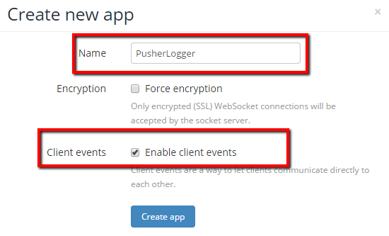

You will need to log in to your Pusher account and create a new application. Give it a useful name and make sure that Client Events is enabled.

The pushLogger.js file should have the App ID that your new Pusher application created. You can have any additional code in this file that you want, but you must create the global pusherKey variable.
var pusherKey = '123456778890';
If when you test you get an error, try turning off encryption.
| Type | Message |
|---|